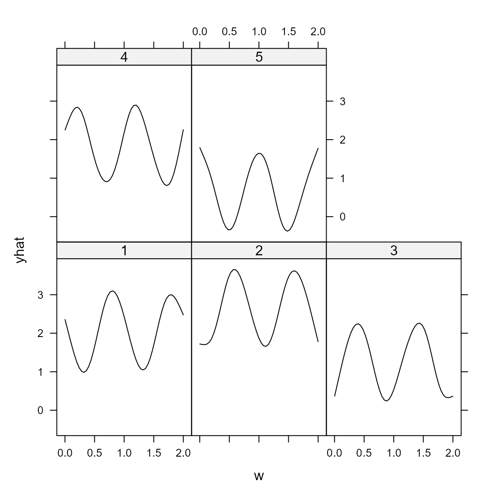
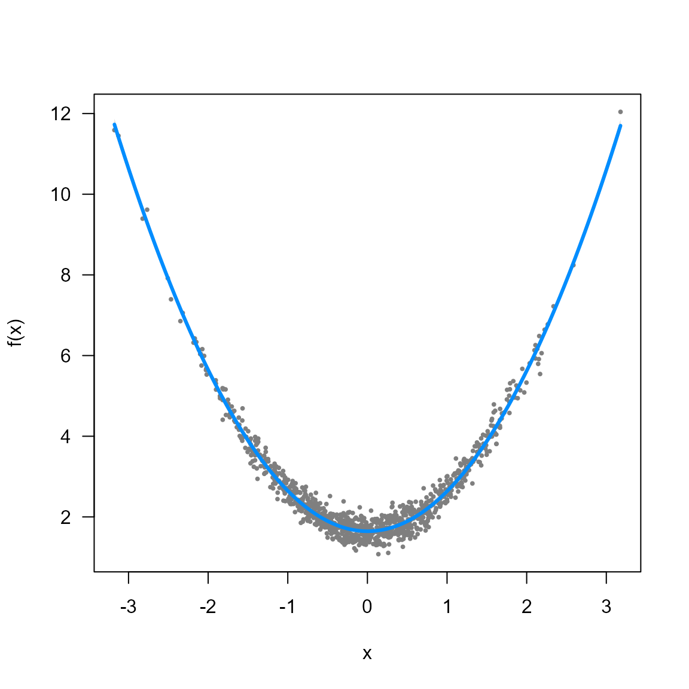
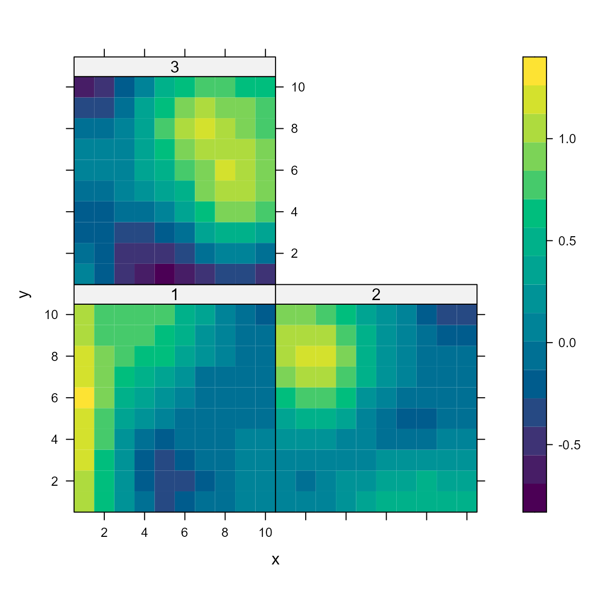
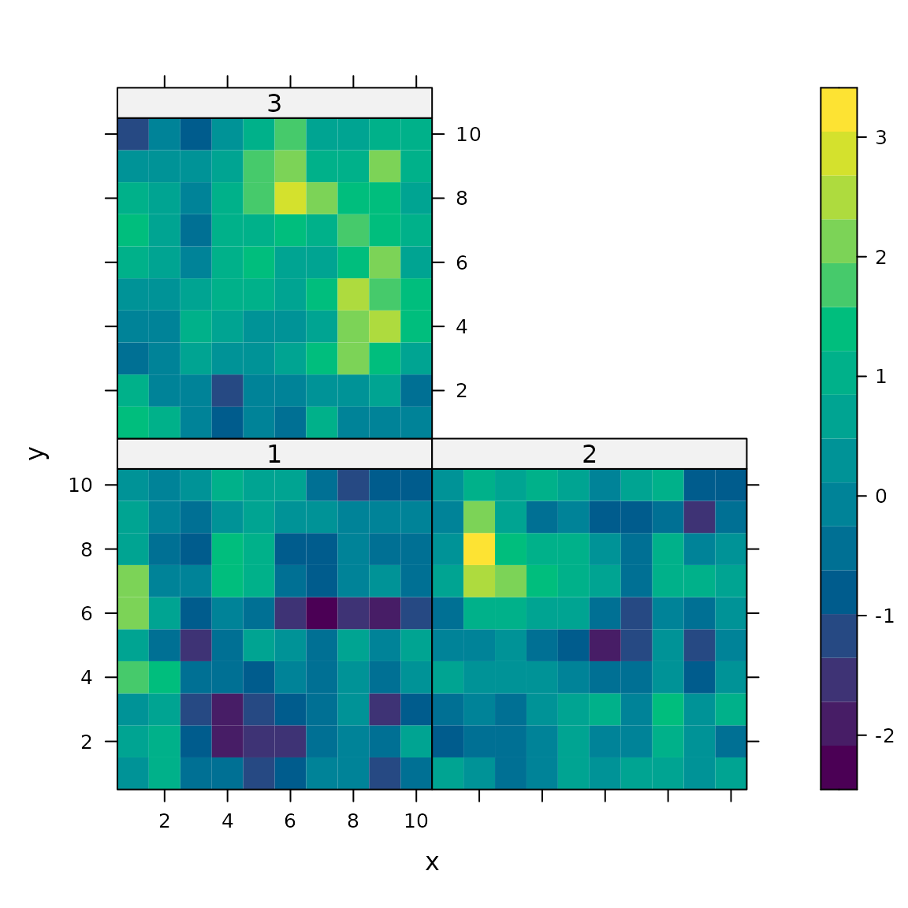
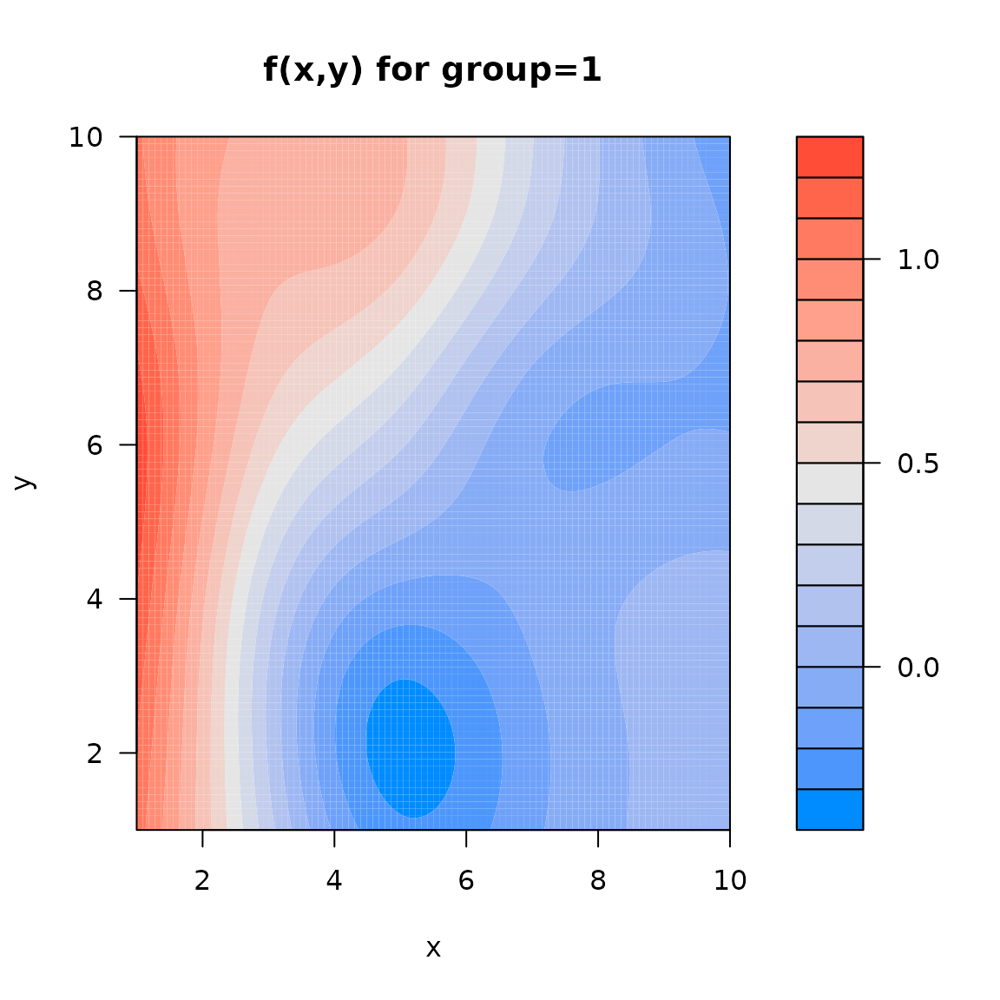

library(tinyVAST)
library(pdp) # approx = TRUE gives effects for average of other covariates
library(lattice)
library(visreg)
library(mgcv)
set.seed(101)
options("tinyVAST.verbose" = FALSE)tinyVAST is an R package for fitting vector
autoregressive spatio-temporal (VAST) models using a minimal and
user-friendly interface. We here show how it can replicate analysis
using splines specified via mgcv
# Simulate
n_obs = 1000
x = rnorm(n_obs)
group = sample( x=1:5, size=n_obs, replace=TRUE )
w = runif(n_obs, min=0, max=2)
z = 1 + x^2 + cos((w+group/5)*2*pi) + rnorm(5)[group]
a = exp(0.1*rnorm(n_obs))
y = z + a + rnorm(n_obs, sd=0.2)
Data = data.frame( x=x, y=y, w=w, z=z, group=factor(group), a=a )
# fit model
Formula = y ~ 1 + s(group, bs="re") + poly(x, 2, raw=TRUE) + s(w, by=group, bs="ts") # + offset(a)
myfit = tinyVAST( data = Data,
formula = Formula )We can then compute the percent deviance explained, and confirm that it is identical to that calculated using mgcv
R1 = sum( residuals(myfit, type="deviance")^2 )
# tinyVAST null model with just a single intercept
null = tinyVAST( data = Data,
formula = y ~ 1 )
R0 = sum( residuals(null, type="deviance")^2 )
# Percent deviance explained
1 - R1/R0
#> [1] 0.9814343
#
mygam_reduced = gam( Formula, data=Data ) #
summary(mygam_reduced)$dev.expl
#> [1] 0.9814113tinyVAST then has a standard predict
function:
predict(myfit, newdata=data.frame(x=0, y=1, w=0.4, group=2, a=1) )
#> [1] 2.977754and this is used to compute partial-dependence plots using package
pdp
# compute partial dependence plot
Partial = partial( object = myfit,
pred.var = c("w","group"),
pred.fun = \(object,newdata) predict(object,newdata),
train = Data,
approx = TRUE )
# Lattice plots as default option
plotPartial( Partial )Alternatively, we can use visreg to visualize
output:
visreg(myfit, xvar="group", what="p_g")
#> iter: 1 mgc: 8.587517e-13
#> Matching hessian patterns... Done
#> outer mgc: 0.001043334
#> Warning in plot.window(...): "what" is not a graphical parameter
#> Warning in plot.xy(xy, type, ...): "what" is not a graphical parameter
#> Warning in axis(side = side, at = at, labels = labels, ...): "what" is not a
#> graphical parameter
#> Warning in axis(side = side, at = at, labels = labels, ...): "what" is not a
#> graphical parameter
#> Warning in box(...): "what" is not a graphical parameter
#> Warning in title(...): "what" is not a graphical parameter
#> Warning in axis(side = 1, at = c(0.0833333333333333, 0.291666666666667, :
#> "what" is not a graphical parameter
visreg(myfit, xvar="x", what="p_g")
#> iter: 1 mgc: 8.587517e-13
#> Matching hessian patterns... Done
#> outer mgc: 0.001043334
#> Warning in plot.window(...): "what" is not a graphical parameter
#> Warning in plot.xy(xy, type, ...): "what" is not a graphical parameter
#> Warning in axis(side = side, at = at, labels = labels, ...): "what" is not a
#> graphical parameter
#> Warning in axis(side = side, at = at, labels = labels, ...): "what" is not a
#> graphical parameter
#> Warning in box(...): "what" is not a graphical parameter
#> Warning in title(...): "what" is not a graphical parameter
visreg(myfit, xvar="w", by="group", what="p_g")
#> iter: 1 mgc: 8.587517e-13
#> Matching hessian patterns... Done
#> outer mgc: 0.001043334
#> iter: 1 mgc: 8.587517e-13
#> Matching hessian patterns... Done
#> outer mgc: 0.001043334
#> iter: 1 mgc: 8.587517e-13
#> Matching hessian patterns... Done
#> outer mgc: 0.001043334
#> iter: 1 mgc: 8.587517e-13
#> Matching hessian patterns... Done
#> outer mgc: 0.001043334
#> iter: 1 mgc: 8.587517e-13
#> Matching hessian patterns... Done
#> outer mgc: 0.001043334
Alternatively, we can calculate derived quantities via Monte Carlo integration of the estimated density function:
# Predicted sample-weighted total
integrate_output(myfit)
#> Estimate Std. Error Est. (bias.correct) Std. (bias.correct)
#> 2616.538079 7.187831 2616.538079 NA
# True (latent) sample-weighted total
sum( Data$z )
#> [1] 1606.42Similarly, we can fit a grouped 2D spline
# Simulate
R = exp(-0.4 * abs(outer(1:10, 1:10, FUN="-")) )
z = mvtnorm::rmvnorm(3, sigma=kronecker(R,R) )
Data = data.frame( expand.grid(x=1:10, y=1:10, group=1:3), z=as.vector(t(z)))
Data$n = Data$z + rnorm(nrow(Data), sd=0.1)
Data$group = factor(Data$group)
# fit model
Formula = n ~ s(x, y, by=group)
myfit = tinyVAST( data = Data,
formula = Formula )
# compute partial dependence plot
mypartial = partial( object = myfit,
pred.var = c("x","y","group"),
pred.fun = \(object,newdata) predict(object,newdata),
train = Data,
approx = TRUE )
# Lattice plots as default option
plotPartial( mypartial )
# Lattice plot of true values
mypartial$yhat = Data$z
plotPartial( mypartial )
We can again use visreg to visualize response surfaces,
although it doesn’t seem possible to extract a grouped spatial term, so
we here show only a single term:
out = visreg2d( myfit, "x", "y", cond=list("group"=1), plot=FALSE )
plot( out, main="f(x,y) for group=1")